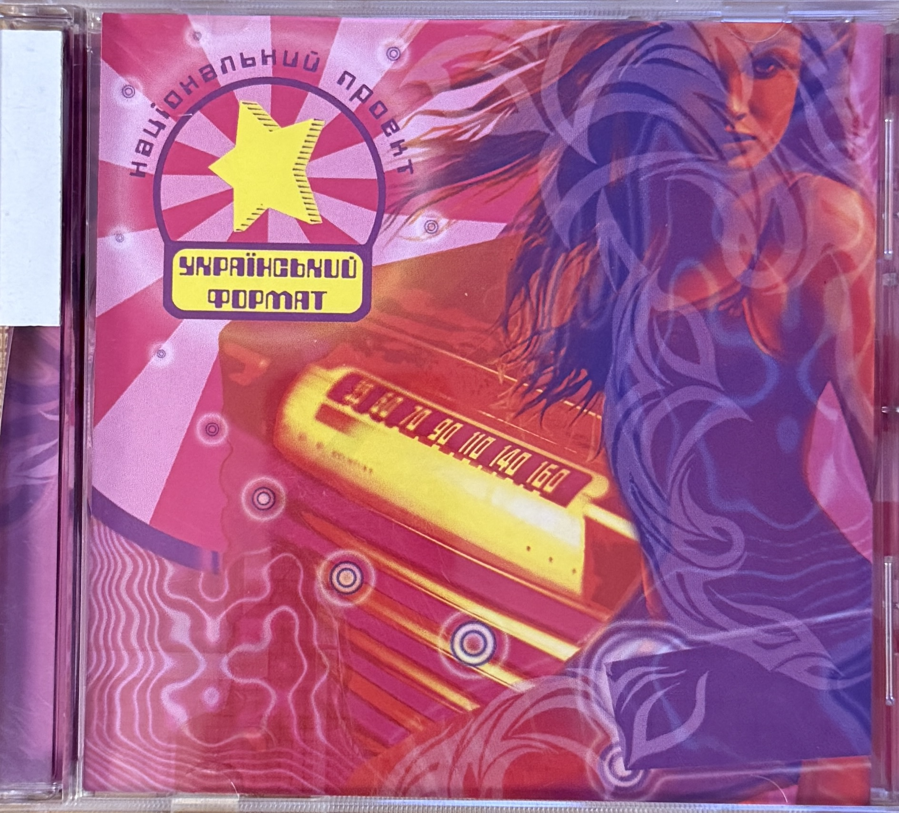
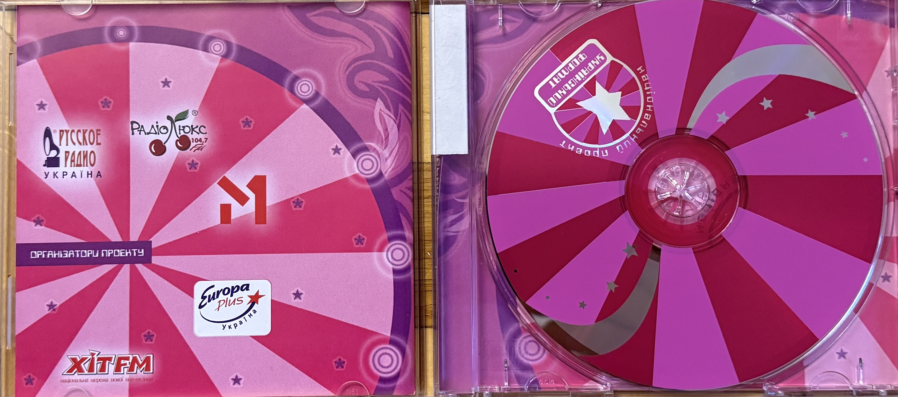
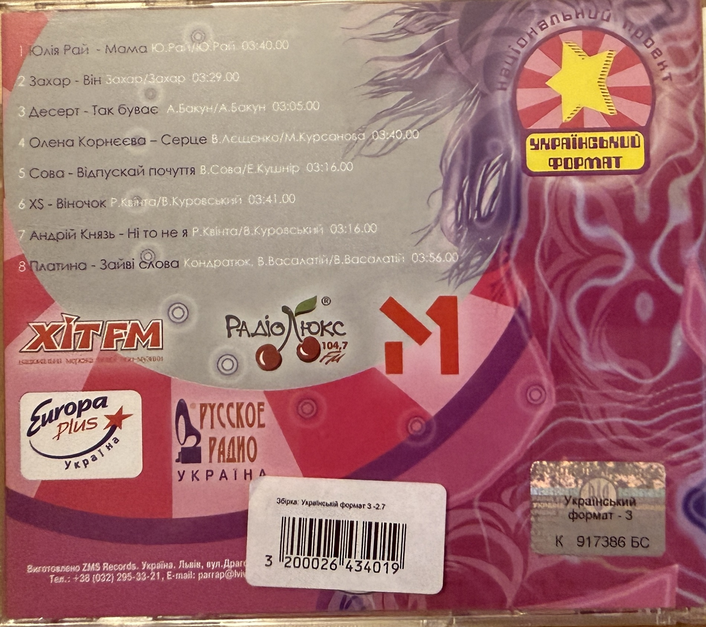

| Archive Title | Український формат |
| Material Type | Physical Compilation CD |
| Project | National Project “Ukrainian Format” (Національний проект «Український формат») |
| Compilation Year | 2005 |
| Featured Group | Dessert (Десерт) |
| Group Members | Uliana Latyk and Mariana Krylyk |
| Featured Track | Так буває |
| Track Number | 3 |
| Track Duration | 03:05 |
| Printed Track Credit | А. Бакун / А. Бакун |
| Barcode | 3200026434019 |
| Format | CD |
| Country | Ukraine |
“Український формат” (“Ukrainian Format”) is a physical compilation CD from 2005 associated with the National Project “Ukrainian Format” (“Український формат”). The compilation documents Ukrainian performers participating in the project during this period.
The Lviv group Dessert (Десерт), whose members were Uliana Latyk and Mariana Krylyk, is represented on the compilation by the song “Так буває”. The recording appears as track 3 with a duration of 03:05.
The back cover of the physical release lists the printed credit “А. Бакун / А. Бакун” alongside the Dessert track. The exact functions represented by the two printed credit positions are preserved here as they appear on the source and are not further interpreted without additional documentation.
The physical edition provides direct archival evidence of Dessert’s presence on a compilation connected with the “Ukrainian Format” project and documents the professional activity of Uliana Latyk during her period as a member of the group.
This release is documented as part of Uliana Latyk’s early artistic career as a member of Dessert. It is a group recording and compilation appearance and is not presented as a solo Ana Danch release.
| Archive Category | Early Career – Group Recordings / Compilation Appearance |
| Original Name | Uliana Latyk |
| Current Stage Name | Ana Danch |
| Group | Dessert |
| Other Group Member | Mariana Krylyk |
| Compilation | Ukrainian Format |
| Compilation Year | 2005 |
| Featured Recording | Так буває |
| Archive Reference | Ukrainian Format (2005) – Dessert |
| Country | Ukraine |
| Featured Group | Dessert (Десерт) |
| Group Members | Uliana Latyk and Mariana Krylyk |
| Featured Track | Так буває |
| Printed Track Credit | А. Бакун / А. Бакун |
| Release | Український формат |
| Release Type | Compilation CD |
| Release Year | 2005 |
| Project | Національний проект «Український формат» |
| Featured Track | Track 3 – Десерт – «Так буває» |
| Track Duration | 03:05 |
| Barcode | 3200026434019 |
| Manufactured by | ZMS Records |
| Manufacturing Location | Ukraine, Lviv, вул. Драгоманова, 28 |
Front cover of the 2005 physical compilation CD «Український формат».

Physical CD and inner artwork of the 2005 compilation «Український формат».

Back cover and tracklist documenting Dessert (Десерт) with the song «Так буває» as track 3, duration 03:05.
The preserved physical release documents the participation of Dessert (Десерт) in the 2005 compilation «Український формат». At this time, the group members were Uliana Latyk and Mariana Krylyk.
This archival record documents the release solely in connection with Uliana Latyk’s membership in Dessert. The compilation and the Dessert recording are not presented as part of the solo Ana Danch release catalogue.
Dessert is represented on the compilation by track 3, «Так буває», with a printed duration of 03:05. The back cover also displays the credit «А. Бакун / А. Бакун». Because the exact functions of these two printed credit positions are not identified on the preserved material, they are recorded without further interpretation.
The physical release bears the barcode 3200026434019 and states that it was manufactured by ZMS Records in Lviv, Ukraine, вул. Драгоманова, 28. The preserved archival materials consist of the front cover, the disc with inner artwork, and the back cover with the tracklist.